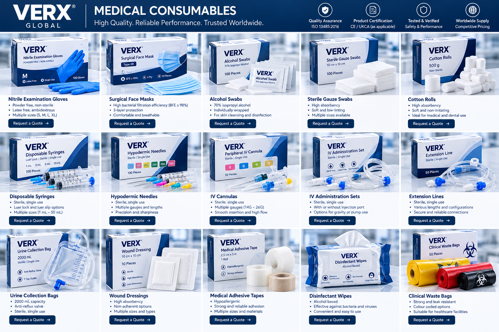

Medical products for
diverse healthcare needs.
Explore VERX medical products, equipment, consumables and clinical supplies. Ask our team about specific specifications and availability.
A comprehensive medical offering.
Explore our broad product range. Individual product availability, specifications, certification and market eligibility should be confirmed before ordering.
Images show illustrative product and packaging concepts, not verified inventory, specifications or regulatory approvals.
Explore the consumables collection.
Our approved catalogue design brings together everyday medical essentials with consistent VERX branding. Product images are visual concepts; specifications and regulatory status are confirmed during quotation.

Illustrative product and packaging designs. Product sizes, claims and certifications shown in artwork are not verified specifications.
Enquire About Medical ConsumablesAppropriate regulatory documentation matters.
Regulatory requirements differ by product classification and destination country. VERX aims to support customers with relevant product-specific information, including applicable certificates, declarations, labelling and other technical documentation where required.
Any claim of CE marking, UKCA marking, FDA clearance or other authorisation should be confirmed for the specific product before publication or sale.
Request Product DetailsProduct packaging shown is a visual concept, not verified actual stock.
Quality without compromise.
Quality, safety and regulatory compliance are central to our medical product offering. We focus on reliable performance, competitive pricing and the documentation applicable to each product and destination market.
ISO 13485:2016
Quality management system certification covering relevant manufacturing activities, subject to verification of certificate scope and validity.
Product Certificates
Relevant product-specific certifications, declarations and regulatory documentation.
Testing & Verification
Applicable test reports and performance verification documentation.
Quality Control
Documented inspection and quality-control procedures relevant to each product.
Calibration & Accuracy
Calibration records and accuracy information for applicable medical equipment.
Worldwide Supply
Product availability and market-specific regulatory requirements are confirmed for each enquiry.
Documentation is product-specific and supplied where applicable. ISO 13485 certification relates to a quality management system, not certification of an individual product.
Request Product Documentation